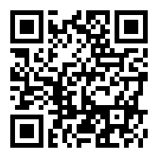
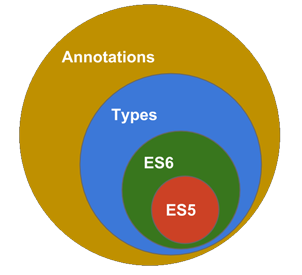
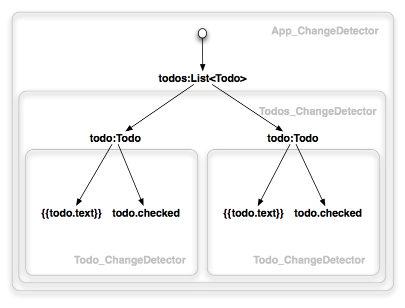
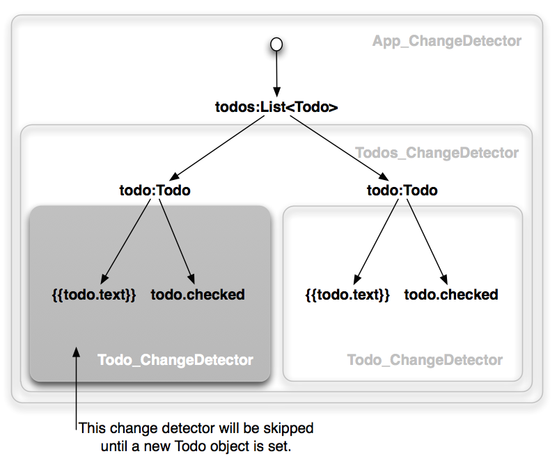
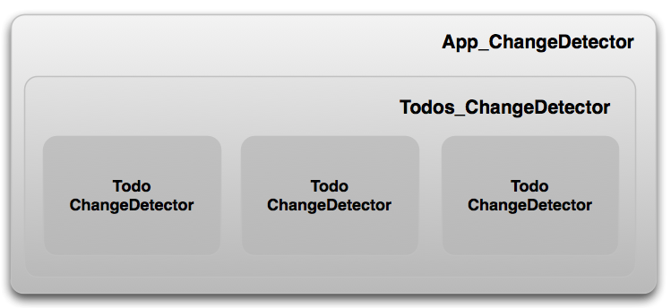
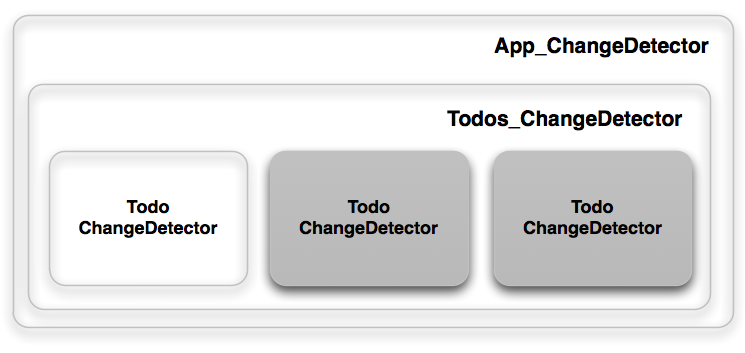
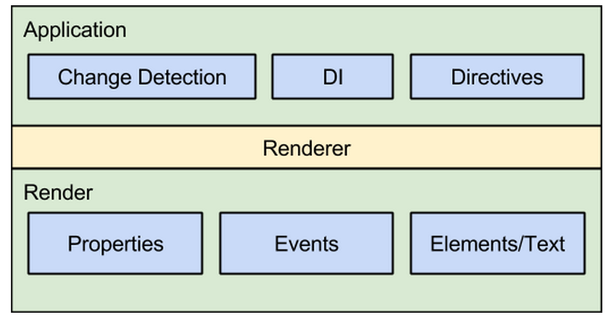
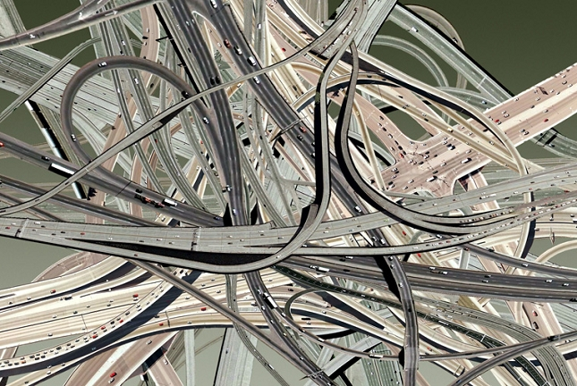

Angular 2Architectures behind it Superheroic JavaScript MVW Framework2009LanguageJS/ES5DartES6 (Traceur)AtScriptTypeScript NoControllersProvidersServicesFactoriesClassesTemplate Syntaxx - ?Change DetectionImmutable objectsIf a component depends only on its bindings, and the bindings are immutable, then this component can change if and only if one of its bindings changes.Observable objectsIf a component depends only on its bindings, and the bindings are observable, then this component can change if and only if one of its bindings emits an event.$apply()XZone.jsRenderingServer-side renderingNative mobile appsApp code run in Web WorkersClearer separation of application logic from the graphical aspects of the application.Routing Works with Angular 1.x!And...Guess what!You can play with all these things right now!